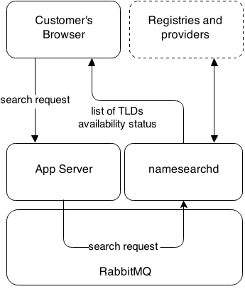
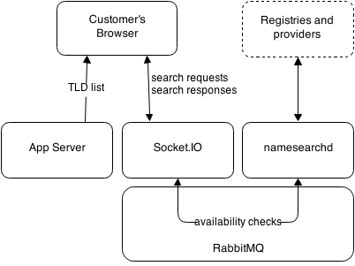

A few weeks ago we quietly released an almost completely reworked domain name search engine. Our older system, of which there had already been several iterations, was no longer coping with our incremental growth and the dozens of new top level domains being released each month (with 500+ more still due to launch). Not only are more people searching for domains, but the number of domains searched was stretching our old domain search engine’s limits.
This is an overview of the issues in our old system and how the new one solves these issues and sets us up for future development.
The old way
Our stack for search included an Erlang application (hereafter called namesearchd) that listened for WebSocket connections using SockJS. It also listened to RabbitMQ messages from our web servers to indicate a new search had been triggered.

When a customer loaded the search page, their browser connected to SockJS with their session ID. When they entered a domain name, the search was sent to the web application, and then after some validation, the search was forwarded via RabbitMQ to namesearchd with the session and search ID. This made namesearchd do the following:
- Send a list of TLDs to the user with price information.
- Make requests to the registries or registrars that we connect to, asking if the name is available.
- Cache responses to avoid duplicate checks for the same name and to avoid getting the TLD list from our database on every search request.
- Forward responses to the user using the session and search ID to match it to the SockJS connection.
While this served us okay for a while, there were a few problems causing frustration for our customers and for us:
- Every time a domain name was searched, we sent back the list of TLDs which was mostly static.
- A search would send requests to check all available TLDs at the time the search was sent. While we maintain a persistent connection to our upstream services and buffer these checks, sending this mass of checks at once tied up the queue until they were all processed.
- We started hitting API limits for checks, although these issues were temporarily resolved by talking nicely to the right people.
- All the above could probably have been worked around, but the most troubling was that SockJS connections would be unexpectedly terminated. This meant people would never get the list of TLDs, wait forever for results, or only get a partial list of availability. We tried the usual—checking connection limits, open file descriptors and timeouts etc.—but found nothing obvious. And unfortunately, none of us are extremely experienced Erlang developers, so despite reading the source code of our dependencies, we couldn’t find the cause. It was also impossible for us to replicate outside of production.
The new way
Given that our biggest concern was the SockJS connections being prematurely terminated, we looked for a new library to use for WebSockets. In the end we chose Socket.IO (on Node.js) after their version 1.0 release. This allowed us to change the focus of the Erlang backend to checking domain availability, and the Node.js daemon to maintain WebSocket connections and forwarding search requests (again, via RabbitMQ) to namesearchd, only this time, namesearchd would reply via RabbitMQ and let Socket.IO deal with handing the response back to the customer’s web browser.

The other difference is that now the web application sends the TLD list to the client, which allows us to not have to send a list of all every TLD for each search request. The initial reason the TLD list was being sent for every search was that it could be different depending on what name you searched for. This filtering is now handled by client-side Javascript (and you’ll get an error if you cheekily use the Socket.IO connection to search for, say, a two-character domain on a TLD that doesn’t support two letter name registrations).
The frontend now only searches names as they appear on the screen. So instead of searching for all the TLDs at once, and potentially clogging up the pipes for other people searching at the same time as you, it’ll only show the availability of the domains you’re looking currently looking at. While this adds a slight delay to seeing the availability of a specific domain, it means searches like myawesomename.com come back much faster because we’re not bothering to instantly search every TLD available (and because the customer has specified .com, it’ll show that TLD at the top).
This new design also sets us up to substitute alternative approaches to domain name availability checks. Long lists of domains might be good for some people, while a category-grouping approach might work better for others. And customized search results based on where you’re browsing from (e.g. New Zealand visitors might see .co.nz at the top.).
Give it a go
With all of this in place, your domain searches are snappier and more stable. We’re now gearing up for alternative designs of our domain search results page. And we’d love to hear your thoughts! Try the search box below and let us know what you think.
 — Joel Pitt
— Joel Pitt
@ferrouswheel
September 9, 2014